The government
cannot run
without AI.
One hundred thousand public servants still draft, translate, and research by hand. We’re building them the AI copilot made for their work.
Layer 01Everything Goes Through It
Uzbekistan has always been where it happens first
We had the first algorithm, a star catalog so precise it went unmatched for a century, and the Silk Road that connected East and West.We built a tech unicorn from nothing in four years, and now we're digitizing an entire government from scratch.
But the people running the government are still doing today’s work with yesterday’s tools. Every report, every translation, every draft goes through Word and Excel by hand, and the AI that could help isn’t allowed near it - the data would have to leave the country.
The work isn’t the problem. The lack of a tool built for it is.
Layer 02The Standard Procedure
How the system works today
- 01You open a blank document.
- 02You draft the report by hand.
- 03You switch to Excel for the numbers.
- 04You translate it yourself, sentence by sentence.
- 05You search for the last version, because nothing is indexed.
- 06You rewrite it again for the next department.
- 07You send it, and start the next one.
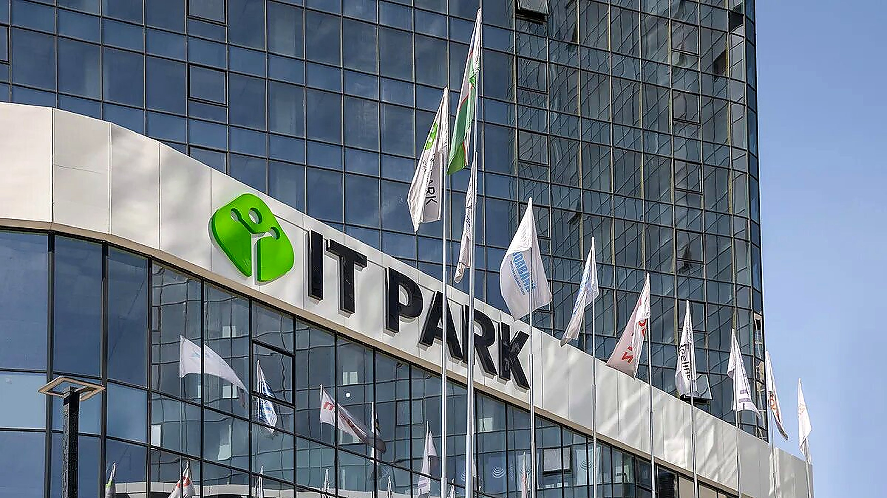
That worked fine in the 2010s, and it does not work now that AI and robotics are moving this fast.
The government wants to move faster, but its employees don't have the software to do it - the tools 100,000+ public servants open every morning were built before AI existed, and the AI tools that could help are foreign, unauthorized, or both.
You can't patch your way out of that.The whole layer has to come out and be rebuilt from the ground up.
Layer 03GovAI
GovAI is the secure AI workspace built for government employees - it drafts, researches, and reviews the work, so staff only need to approve it.
- 01An employee opens GovAI instead of a blank document.
- 02It drafts the report, memo, or translation from what they already have.
- 03A specialist agent handles it for their sector - legal, finance, land, or health.
- 04GovAI Web and GovAI Research pull in what’s needed, sourced and cited.
- 05Every chat stays encrypted, on local government infrastructure.
- 06The employee reviews it, edits it, and sends it.
One AI specialist for every sector of government, running in parallel.
One employee, one document at a time by hand, is the other way to do this.
GovAI runs on local government infrastructure, so every employee gets an AI specialist without a single byte leaving the country.
Every step is auditable, and a person still makes the decision.That part never moves, because the decision belongs to a person.
Giving employees an AI copilot is only the starting point.We're building the sovereign infrastructure underneath it too, so government finally runs on tools it owns instead of tools it rents.
We’re rebuilding the layer the government runs on
Layer 04What Runs on GovAI
Everything a public servant drafts, translates, or researches in a day
- Drafting
- Reports & memosOfficial letters
- Research
- Policy researchLegal researchData analysis
- Agentic Environment
- AI SpecialistsAgentic Workflow
- Office suite
- SpreadsheetsPresentationsMeeting notes
- Portals
- Ijro.uz filingsE-qaror submissionsCase tracking
Everything a public servant used to do alone, by hand, before anyone could act on it.
The people doing this work aren’t abstractions either.
A district office translating a policy overnight, a records clerk searching for a filing that was never indexed, a department rewriting the same report for three different agencies.
They didn't sign up to do this by hand. They're just waiting on a tool built for their work.
Layer 05Where This Goes
The best tool disappears into the work
You just ask, and get back to work.
Drafting a report stops taking your afternoon - you ask GovAI for it, review what comes back, and get on with your day.
Step by step
Same day.
By 2030, every public servant will have an AI copilot
This year Uzbekistan turned 35.By 2030, all 100,000+ of them will have one - drafting, translating, and researching at the speed the work deserves.
When that happens we'll still just be getting started, because giving people better tools was only ever the first step.
The government cannot run at the speed of paper. It has to run at GovAI speed.
Layer 06Proof, Not Promises
Quyi-Chirchiq is already running on GovAI
The government cannot run on paper speed. Quyi-Chirchiq District Hokimiyat is already proving it doesn't have to.
- 50public servants surveyed in the initial pilot.
- 90%said they want to use AI in their work.
- 67%said AI could already help with translation, drafting documents, or research.
The pilot didn't wait for the whole government to be ready.It started with a district office actually doing the work, and measured what happened.
Layer 07The Market Underneath
Sovereign AI software is a $109B market by 2035
Uzbekistan will not be the only government that needs infrastructure it owns instead of rents.
- Today
- $25B
- By 2035
- $109B
- CAGR
- 16%
- Software share
- 22.5% of sovereign AI infrastructure
Source: Insight Ace Analytic Pvt. Ltd.
Every government renting foreign AI infrastructure today is a government that will eventually want to own it instead.GovAI is built to be that infrastructure for Uzbekistan first.
Layer 08Where GovAI Is Headed
Four steps from pilot to national infrastructure
- 01Funding - GovAI gets access to government portals and a GPU cluster.
- 02Pilot Launch - GovAI is piloted in Quyi-Chirchiq District Hokimiyat with 50 public servants.
- 03Product Scope - fine-tune AI agents for the Uzbek language, for more precise tools and better efficiency.
- 04Government Partnership - formalize a government partnership and expand to other agencies and units.
Each step only works because the one before it did.The pilot has to hold before the partnership is worth signing.
Layer 09Who's Building It
A small team, close to the work
- Asqar Arslonov
- Founder of GovAI7 years building full-stack products
- Abdulaziz Muydinjonov
- Developer
- Muhammad Shukurov
- Software Engineer
- Azizbek Aminov
- Chief Financial Operations
Four people, one district, and a government that's ready to move.
The new age of Uzbekistan
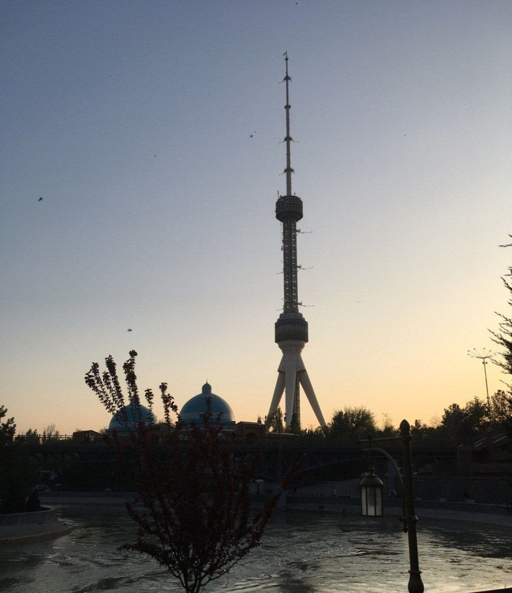

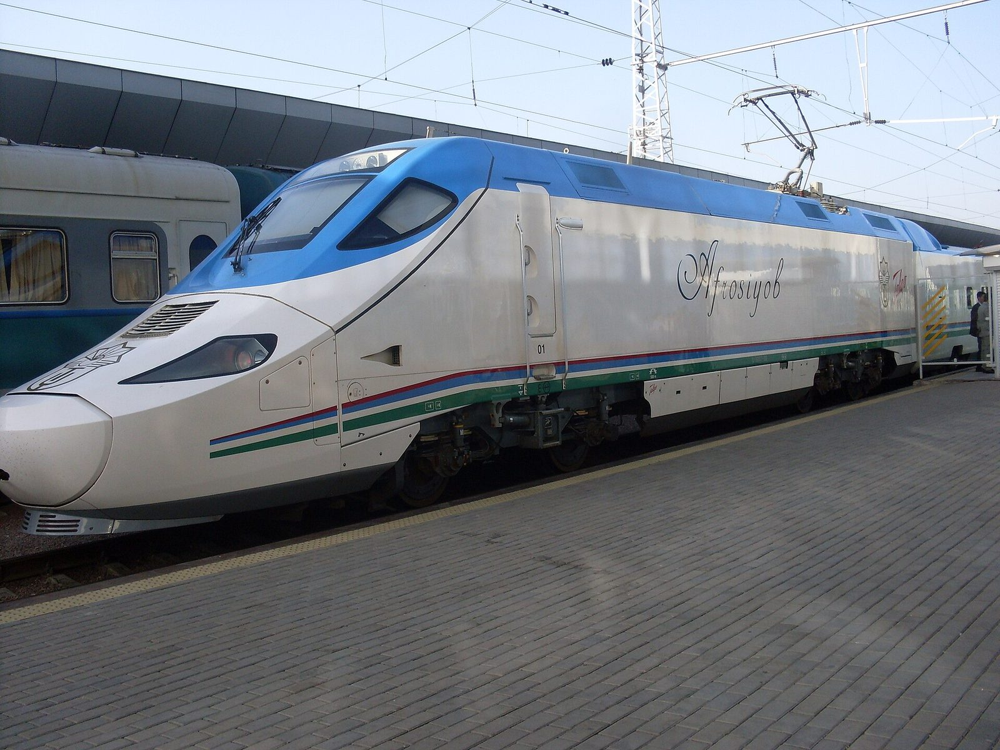
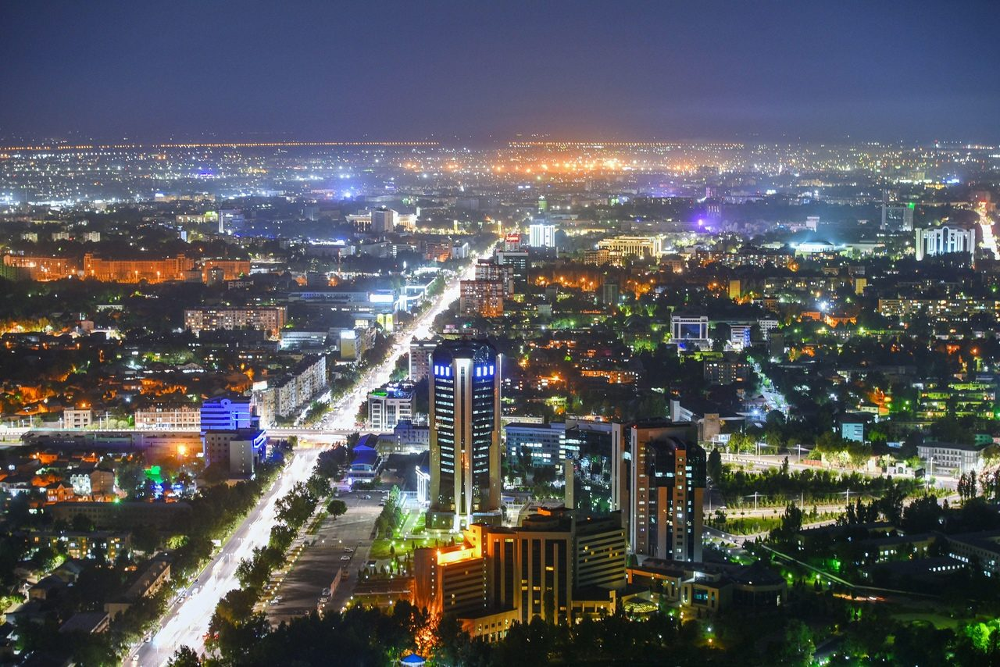
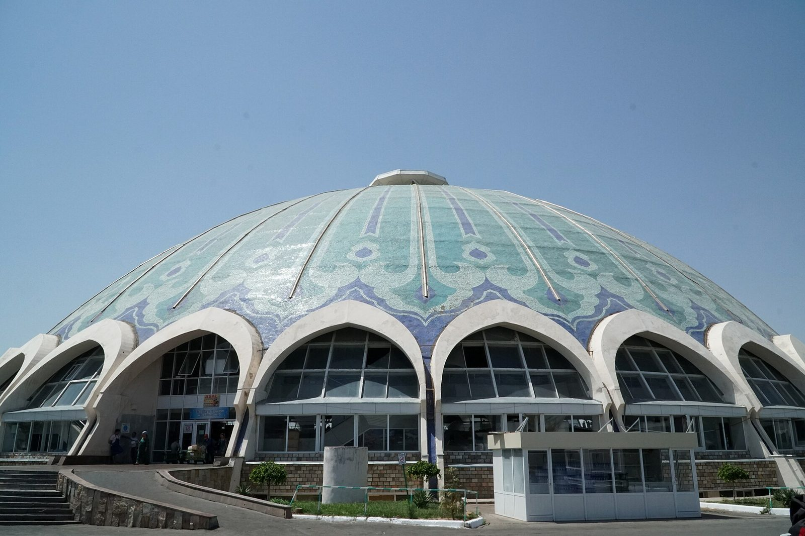
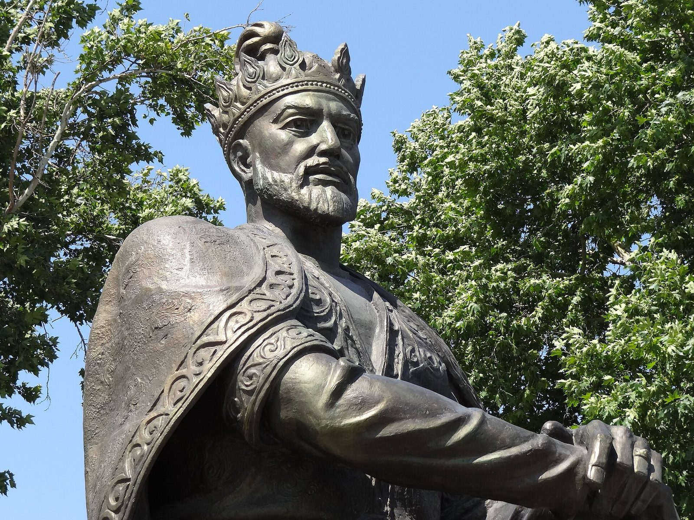
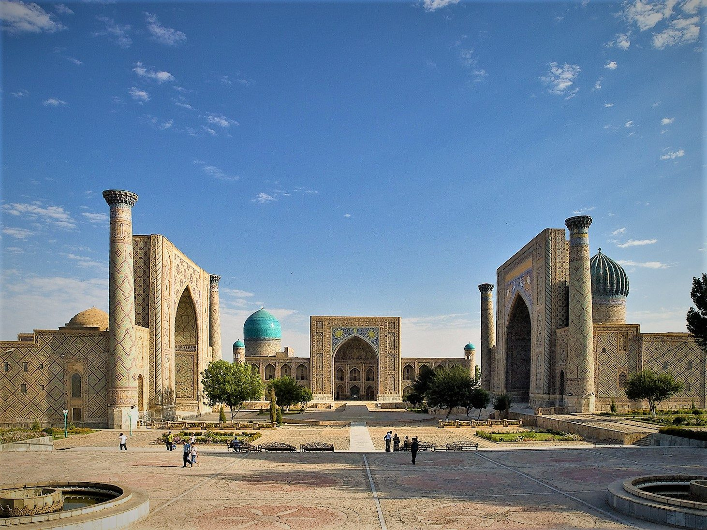
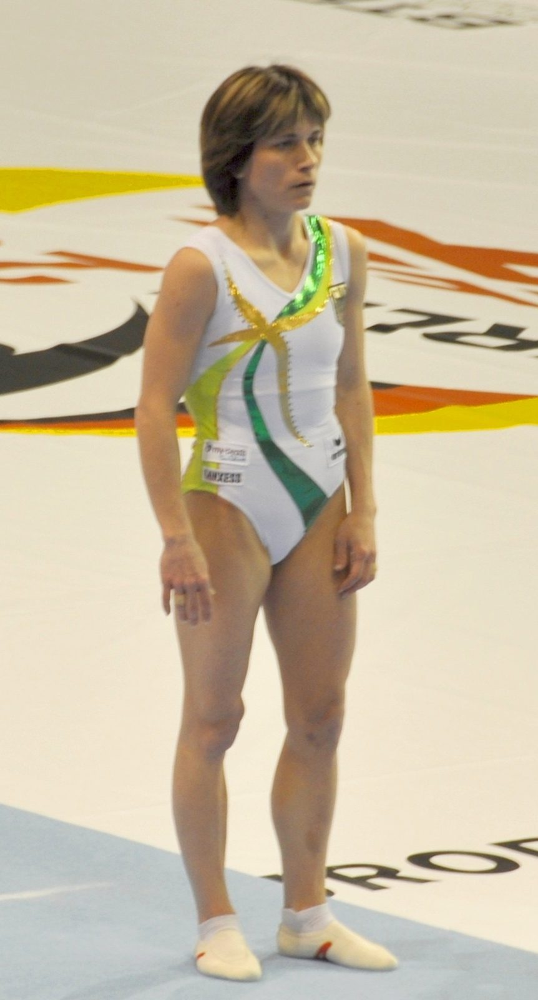
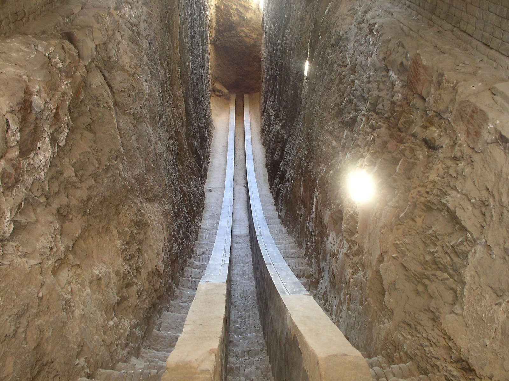
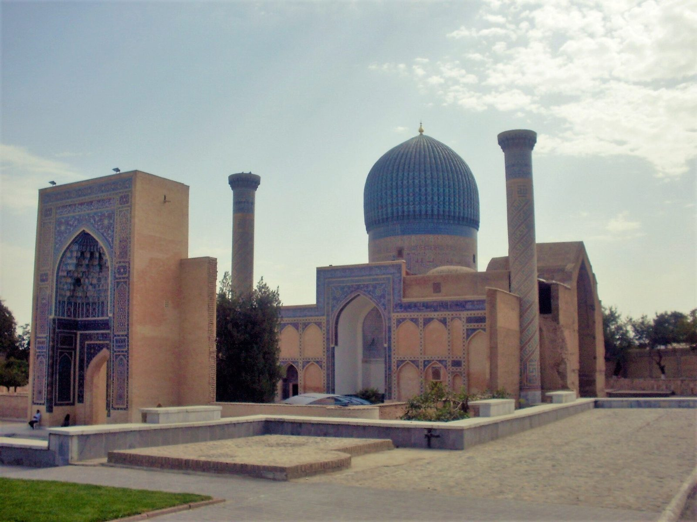
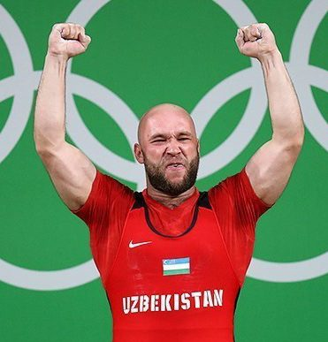